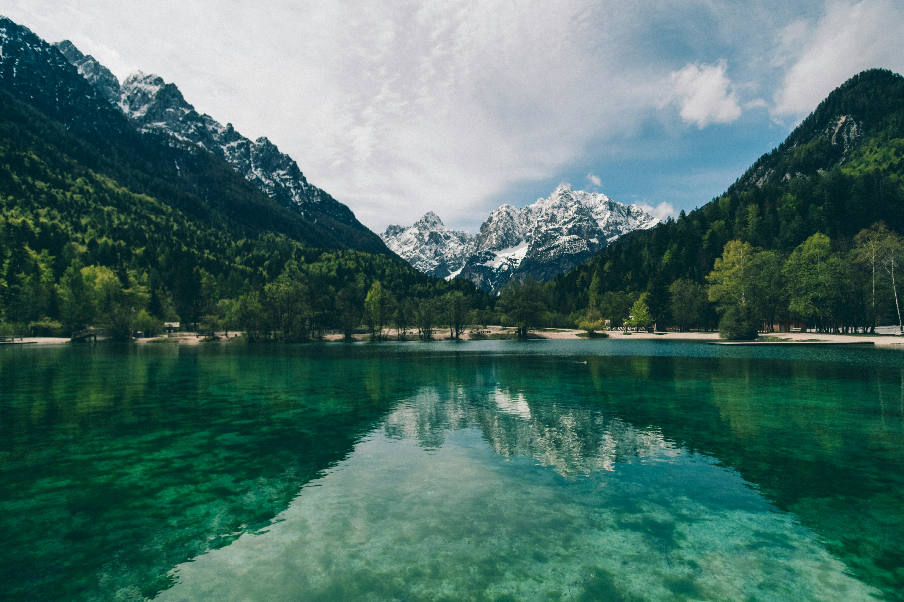
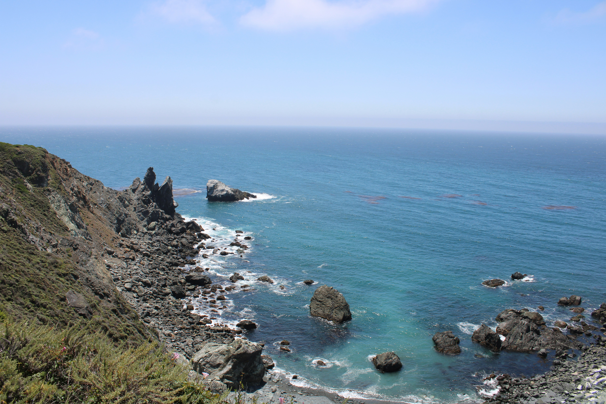
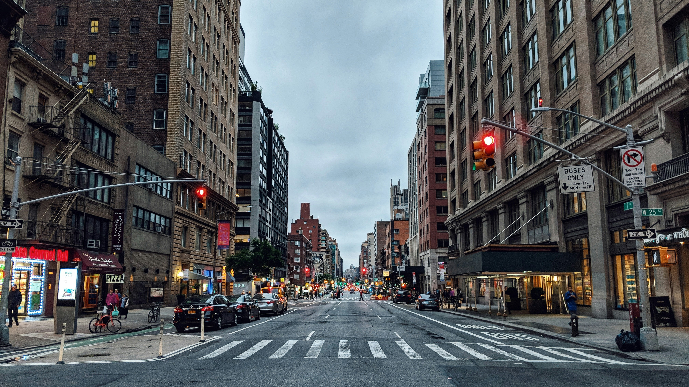
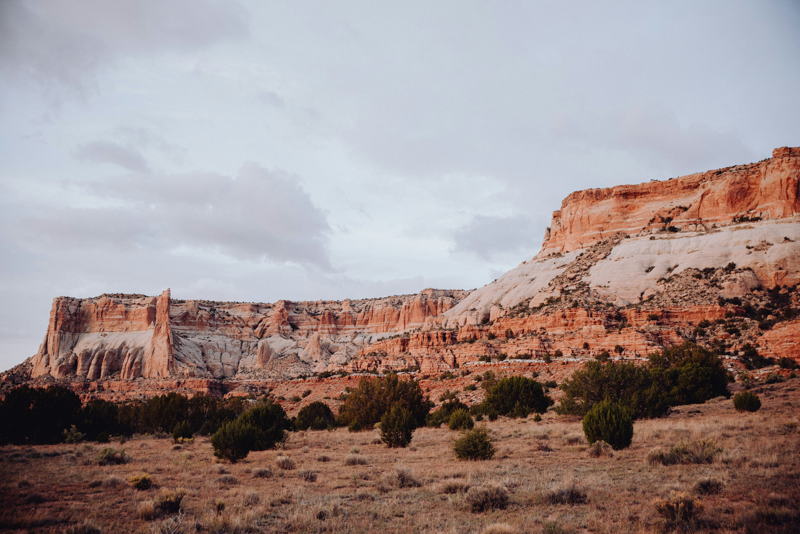
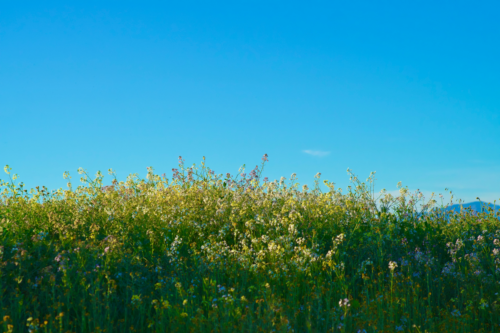
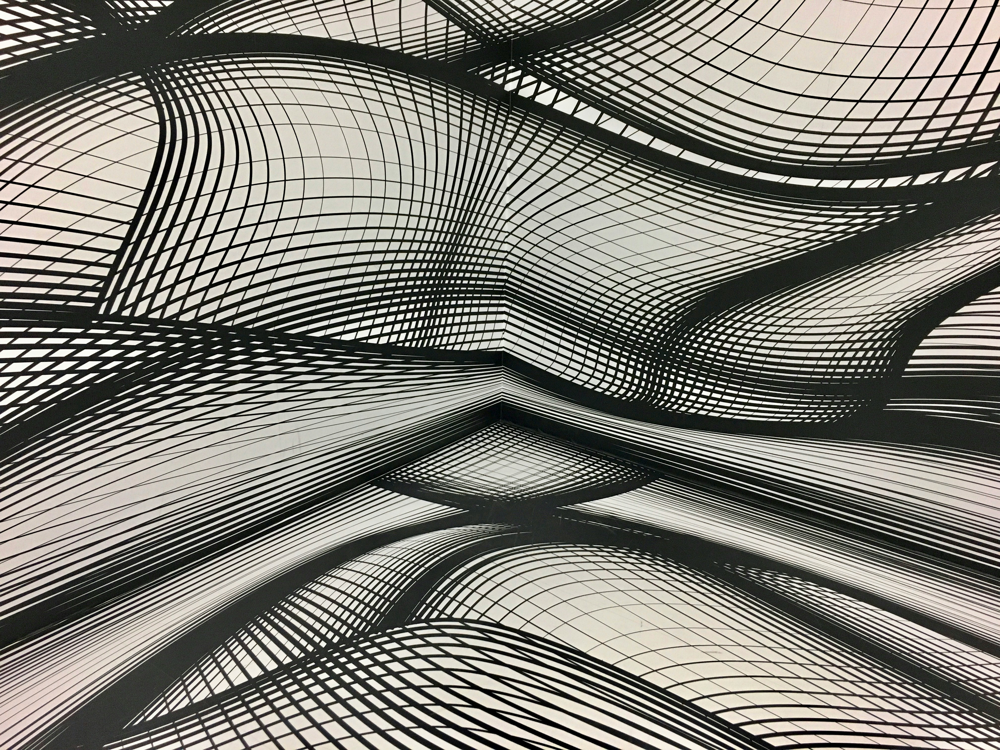

Photo Showcase

A peaceful mountain lake surrounded by high peaks.
 A quiet walking path passing through a green forest.
A quiet walking path passing through a green forest.

Ocean waves meeting a rugged rocky coastline.

A lively city street surrounded by tall buildings.

Warm desert dunes stretching toward the horizon.

A colorful field of wildflowers under an open sky.
Decorative Image

A decorative visual used to add atmosphere to the showcase.
Featured Video
A short landscape video complementing the photo collection.
Go to Project of Reference